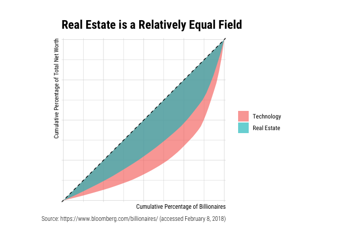

Example
Suppose you have a vector with each element representing the amount of income or wealth of an individual, and you are interested in knowing how much of that is produced by the top x% of the population, then the gglorenz::stat_lorenz(desc = TRUE) would make a ggplot2 graph for you.
library(tidyverse)
#> ── Attaching packages ─────────────────────────────────────────────────────────────────────── tidyverse 1.2.1 ──
#> ✓ ggplot2 3.3.0 ✓ purrr 0.3.4
#> ✓ tibble 3.0.1 ✓ dplyr 1.0.0
#> ✓ tidyr 1.1.0 ✓ stringr 1.4.0
#> ✓ readr 1.3.1 ✓ forcats 0.4.0
#> ── Conflicts ────────────────────────────────────────────────────────────────────────── tidyverse_conflicts() ──
#> x dplyr::filter() masks stats::filter()
#> x dplyr::lag() masks stats::lag()
library(gglorenz)
billionaires
#> # A tibble: 500 x 6
#> Rank Name Total_Net_Worth Country Industry TNW
#> <chr> <chr> <chr> <chr> <chr> <dbl>
#> 1 1 Jeff Bezos $118B United States Technology 118
#> 2 2 Bill Gates $91.3B United States Technology 91.3
#> 3 3 Warren Buffett $86.1B United States Diversified 86.1
#> 4 4 Mark Zuckerberg $74.3B United States Technology 74.3
#> 5 5 Amancio Ortega $71.7B Spain Retail 71.7
#> 6 6 Bernard Arnault $65.0B France Consumer 65
#> 7 7 Carlos Slim $64.7B Mexico Diversified 64.7
#> 8 8 Larry Ellison $54.7B United States Technology 54.7
#> 9 9 Larry Page $52.6B United States Technology 52.6
#> 10 10 Sergey Brin $51.2B United States Technology 51.2
#> # … with 490 more rows
billionaires %>%
ggplot(aes(TNW)) +
stat_lorenz(desc = TRUE) +
coord_fixed() +
geom_abline(linetype = "dashed") +
theme_minimal() +
hrbrthemes::scale_x_percent() +
hrbrthemes::scale_y_percent() +
hrbrthemes::theme_ipsum_rc() +
labs(x = "Cumulative Percentage of the Top 500 Billionaires",
y = "Cumulative Percentage of Total Net Worth",
title = "Inequality Among Billionaires",
caption = "Source: https://www.bloomberg.com/billionaires/ (accessed February 8, 2018)")
billionaires %>%
filter(Industry %in% c("Technology", "Real Estate")) %>%
ggplot(aes(x = TNW, colour = Industry)) +
stat_lorenz(desc = TRUE) +
coord_fixed() +
geom_abline(linetype = "dashed") +
theme_minimal() +
hrbrthemes::scale_x_percent() +
hrbrthemes::scale_y_percent() +
hrbrthemes::theme_ipsum_rc() +
labs(x = "Cumulative Percentage of Billionaires",
y = "Cumulative Percentage of Total Net Worth",
title = "Real Estate is a Relatively Equal Field",
caption = "Source: https://www.bloomberg.com/billionaires/ (accessed February 8, 2018)")
If you have a data frame with columns indicating the wealth and number of individuals at that level you can use the n aesthetic like so: ggplot(freqdata, aes(x = value, n = freq) + stat_lorenz().
In addition, the annotate_ineq() function allows you to label the chart with inequality statistics such as the Gini coefficient:
billionaires %>%
ggplot(aes(TNW)) +
stat_lorenz(desc = TRUE) +
coord_fixed() +
geom_abline(linetype = "dashed") +
theme_minimal() +
hrbrthemes::scale_x_percent() +
hrbrthemes::scale_y_percent() +
hrbrthemes::theme_ipsum_rc() +
labs(x = "Cumulative Percentage of the Top 500 Billionaires",
y = "Cumulative Percentage of Total Net Worth",
title = "Inequality Among Billionaires",
caption = "Source: https://www.bloomberg.com/billionaires/ (accessed February 8, 2018)") +
annotate_ineq(billionaires$TNW)
You can also use other geoms such as area or polygon and arranging population in ascending order:
billionaires %>%
filter(Industry %in% c("Technology", "Real Estate")) %>%
add_row(Industry = "Perfect Equality", TNW = 1) %>%
ggplot(aes(x = TNW, fill = Industry)) +
stat_lorenz(geom = "area", alpha = 0.65) +
coord_fixed() +
hrbrthemes::scale_x_percent() +
hrbrthemes::scale_y_percent() +
hrbrthemes::theme_ipsum_rc() +
theme(legend.title = element_blank()) +
labs(x = "Cumulative Percentage of Billionaires",
y = "Cumulative Percentage of Total Net Worth",
title = "Real Estate is a Relatively Equal Field",
caption = "Source: https://www.bloomberg.com/billionaires/ (accessed February 8, 2018)")
billionaires %>%
filter(Industry %in% c("Technology", "Real Estate")) %>%
mutate(Industry = forcats::as_factor(Industry)) %>%
ggplot(aes(x = TNW, fill = Industry)) +
stat_lorenz(geom = "polygon", alpha = 0.65) +
geom_abline(linetype = "dashed") +
coord_fixed() +
hrbrthemes::scale_x_percent() +
hrbrthemes::scale_y_percent() +
hrbrthemes::theme_ipsum_rc() +
theme(legend.title = element_blank()) +
labs(x = "Cumulative Percentage of Billionaires",
y = "Cumulative Percentage of Total Net Worth",
title = "Real Estate is a Relatively Equal Field",
caption = "Source: https://www.bloomberg.com/billionaires/ (accessed February 8, 2018)")
Acknowledgement
The package came to exist solely because Bob Rudis was generous enough to write a chapter that demystifies ggplot2.